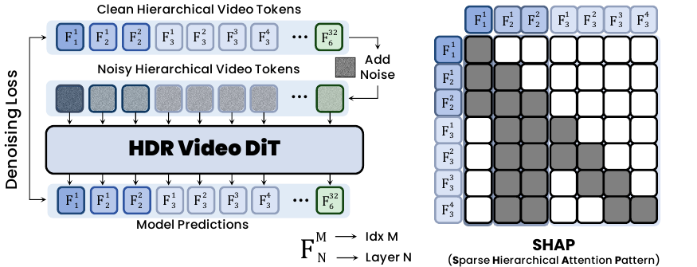
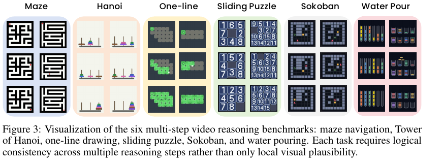
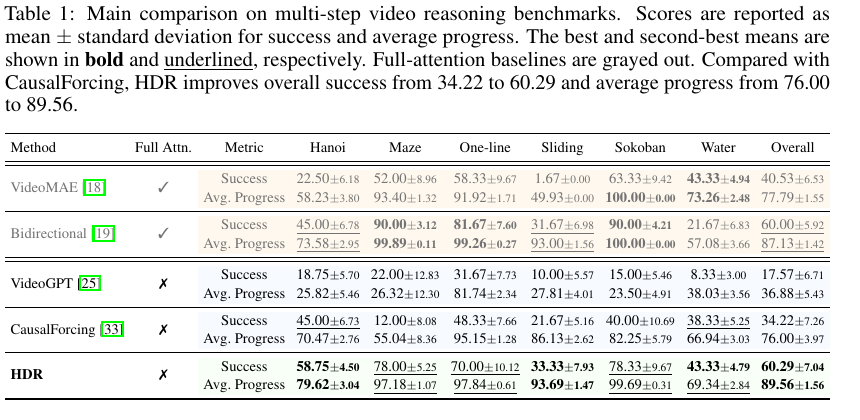
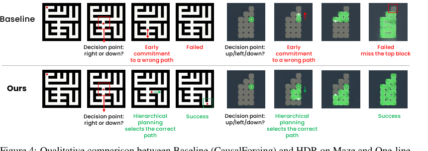
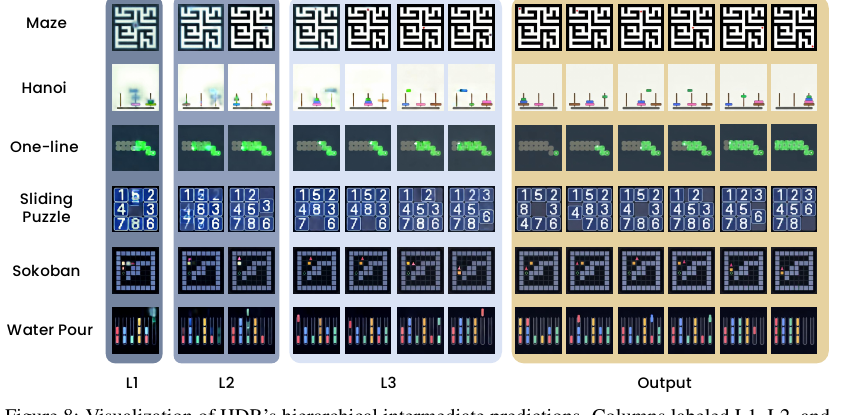
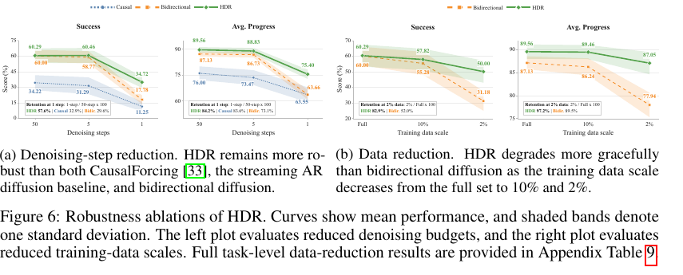
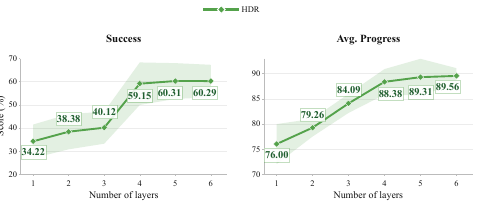
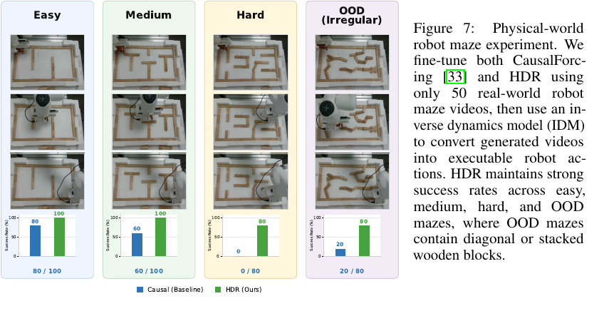

Video models are recently evolving into vision foundation models, but they still lack human-like, multi-step reasoning. Existing streaming autoregressive diffusion models are efficient but lack the reasoning ability, whereas bidirectional diffusion allows for global revision but incurs high inference cost due to the dense frames in fixed-sequence denoising. Consequently, both paradigms struggle to maintain logical consistency with low-latency streaming in complex reasoning tasks.
Bridging this gap, we propose HDR (Hierarchical Denoising for Visual Reasoning), a unified framework for multi-step reasoning by integrating hierarchical latents into the causal video generation process. HDR organizes video latents into a tree-structured hierarchy to perform coarse-to-fine reasoning before streaming output. Coarse denoising layers maintain uncertain hypotheses for global planning, while finer denoising layers progressively refine them into concrete visual states. A sparse hierarchical attention pattern further reduces temporal attention cost.
We construct a level-stratified multi-step video reasoning benchmark with out-of-distribution cases, covering six tasks: maze navigation, Tower of Hanoi, one-line drawing, sliding puzzle, Sokoban, and water pouring. Compared with the streaming autoregressive diffusion baseline, HDR improves overall success from 34.22 to 60.29 and average progress from 76.00 to 89.56, while maintaining low-latency streaming at 0.70s per latent.

HDR represents video latents as a tree-structured hierarchy across temporal resolutions. During inference, tokens are generated in a coarse-to-fine autoregressive order: upper layers form global hypotheses, lower layers refine those hypotheses into concrete visual states, and the final layer streams the output.
SHAP (Sparse Hierarchical Attention Pattern) lets each token attend only to fixed local, parent-level, and first-frame contexts. This keeps temporal attention sparse while allowing information from coarse planning layers to flow into fine visual generation through a shared KV cache.

The benchmark covers six long-horizon reasoning tasks that require logical consistency across generated trajectories rather than only local visual plausibility: maze navigation, Tower of Hanoi, one-line drawing, sliding puzzle, Sokoban, and water pouring.

HDR achieves the best overall success and average progress among compared methods while retaining the low-latency streaming behavior of autoregressive diffusion.





The hierarchy improves robustness under reduced denoising budgets and limited training data. In physical-world maze experiments, HDR also transfers to robot interaction after fine-tuning on 50 real-world robot maze videos.
Maze navigation
Tower of Hanoi
One-line drawing
Sliding puzzle
Sokoban
Water pouring
All extracted supplementary MP4 files are included under static/videos/supplementary/.
@inproceedings{anonymous2026hdr,
title = {Hierarchical Denoising For Multi-Step Visual Reasoning},
author = {Anonymous Author(s)},
booktitle = {Submitted to the 40th Conference on Neural Information Processing Systems},
year = {2026}
}